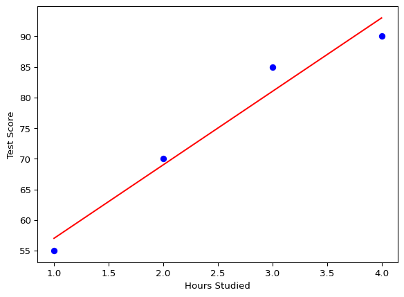

Machine Learning (ML) powers everything from Netflix suggestions to self-driving cars. But what is it? ML is teaching computers to learn from data and make decisions—think of it like training a dog with treats (data) to do tricks (predictions).
2.1 Types of Machine Learning Systems
ML systems are categorized by how they learn. Why? It determines what data they need and how they’ll perform.
2.1.1 1. Supervised Learning
Supervised learning is like a teacher guiding a student with a textbook and answer key. We give the model inputs (features) and outputs (labels) to learn patterns.
2.1.1.1 Key Techniques
Classification: Sorting data into buckets—like labeling emails as “spam” or “not spam.”
import numpy as npimport matplotlib.pyplot as pltfrom sklearn.linear_model import LinearRegression# Features (hours studied), Labels (test scores)X = np.array([[1], [2], [3], [4]])y = np.array([55, 70, 85, 90])model = LinearRegression().fit(X, y)predictions = model.predict(X)plt.scatter(X, y, color="blue")plt.plot(X, predictions, color="red")plt.xlabel("Hours Studied")plt.ylabel("Test Score")plt.show()

Why? This shows how hours studied predict scores with a straight line.
2.1.2 2. Unsupervised Learning
No labels here—think of it like a librarian organizing books without titles. The system finds patterns on its own.
2.1.2.1 Key Techniques
– Clustering: Grouping similar items—like sorting candies by color. – Dimensionality Reduction: Shrinking data while keeping the good stuff—like summarizing a book into key points. Example: K-Means Clustering
from sklearn.cluster import KMeansimport numpy as np# Random data pointsX = np.array([[1, 2], [1, 4], [1, 0], [10, 2], [10, 4], [10, 0]])kmeans = KMeans(n_clusters=2).fit(X)labels = kmeans.labels_print("Cluster labels:", labels)
Cluster labels: [0 0 0 1 1 1]
Why? This groups data into 2 clusters based on similarity.
2.1.3 3. Semi-Supervised Learning
A hybrid approach—imagine teaching with a few labeled examples and a pile of unlabeled ones. Why? It’s efficient when labeling all data is too costly (e.g., speech recognition).
2.1.4 4. Reinforcement Learning
Think of training a puppy with treats and timeouts. An agent learns by trying actions in an environment, earning rewards or penalties. Why? Perfect for dynamic tasks like robotics.
2.1.4.1 Example Concept
A robot learning to walk gets a treat (reward) for each step forward.
2.1.4.2 Main Challenges of Machine Learning
ML isn’t perfect—here’s why these challenges matter.
Insufficient Training Data: Models need lots of data—like a chef needing ingredients to cook well.
Nonrepresentative Data: Bad data = bad predictions—like using beach weather to predict mountain snow.
Poor Quality Data: Noise or errors mess it up—like static in a phone call.
Irrelevant Features: Extra junk confuses the model—like adding random spices to a recipe.
Overfitting: Memorizing the textbook but failing the test—too specific to training data.
Underfitting: Too simple, like using a straight line for a curvy pattern. Example: Overfitting vs. Underfitting